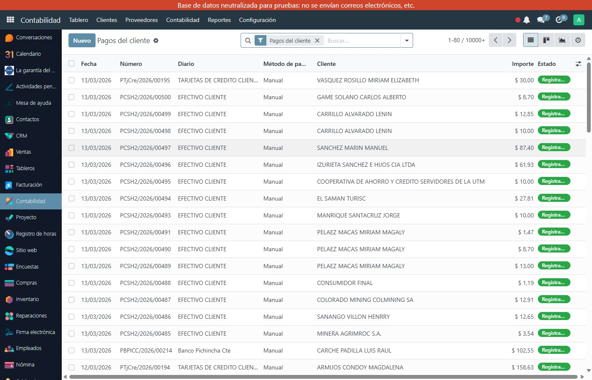

Imprime cheques directamente desde Odoo 17 con el layout oficial de Produbanco, Banco del Pacífico y más. Monto en letras en español, formato exacto del talonario ecuatoriano. Funciona en Community y Enterprise.
Plantilla de cheque optimizada para el formato oficial de Produbanco Ecuador. Incluye beneficiario, valor en letras, fecha, monto y espacio para firma.
Plantilla de cheque para el formato de Banco del Pacífico Ecuador. Compatible con los talonarios estándar del banco.
Layout base personalizable para adaptar a cualquier banco ecuatoriano. Ajusta márgenes y posiciones según tu talonario específico.
El monto se convierte automáticamente a letras: 'CIEN CON 50/100 DÓLARES'. Sin errores de tipeo, en español ecuatoriano correcto.
Imprime directamente desde Pagos de proveedor. Selecciona el pago, elige el banco y genera el PDF listo para imprimir en tu talonario físico.
Incluye la definición del formato de papel del cheque ecuatoriano para que la impresión quede perfectamente alineada en los talonarios físicos.
Instala el módulo en tu Odoo 17. Requiere account_check_printing (incluido en Odoo 17 Community y Enterprise).
Ve a Contabilidad → Pagos de proveedor, selecciona el pago que deseas emitir en cheque y abre el formulario.
Selecciona el layout de tu banco (Produbanco, Pacífico, etc.) y descarga el PDF listo para imprimir en tu talonario.
Lista de pagos en Odoo 17 — selecciona un pago y genera el cheque PDF con el layout de tu banco ecuatoriano